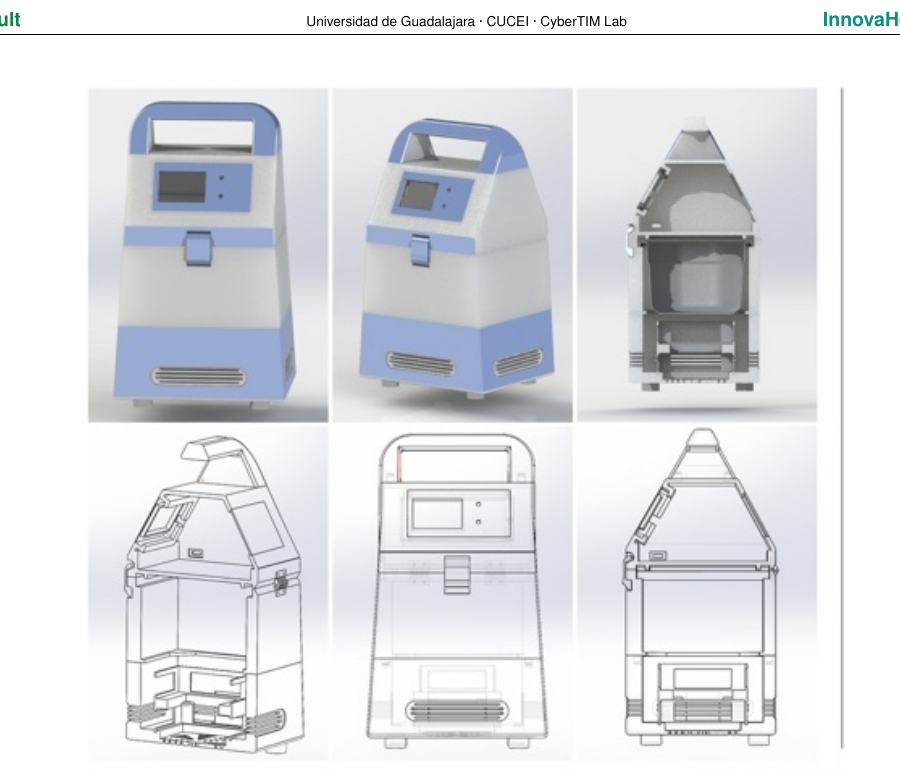
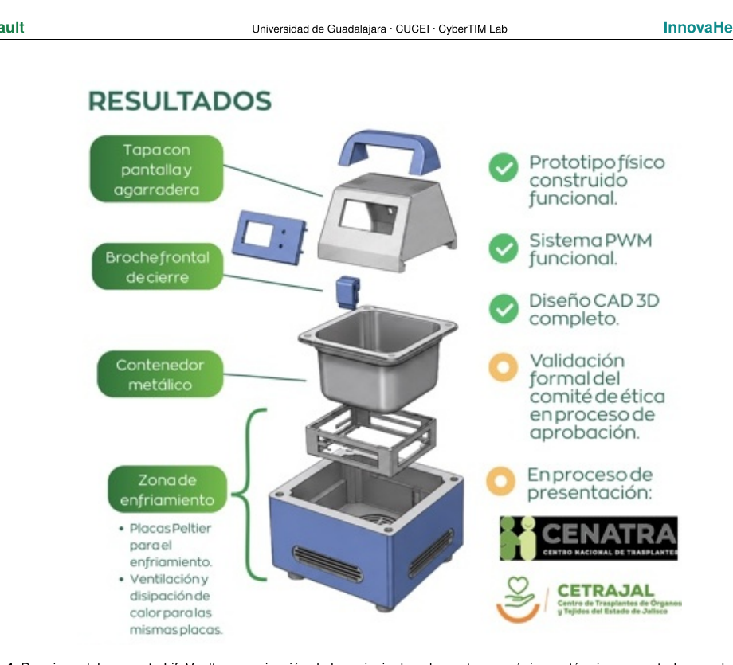

En desarrollo
K1 — Kidney
Primera variante recomendada para fijar masa, volumen, autonomía, rango térmico y criterios de verificación.
LifeVault desarrolla una plataforma portátil de conservación activa, monitoreo y trazabilidad para el transporte de órganos destinados a trasplante, diseñada desde México para contextos hospitalarios donde costo, control térmico y logística importan por igual.
Actualmente en etapa de prototipo y validación. No es un dispositivo clínicamente validado ni comercializado.

Entre una hielera pasiva y una plataforma avanzada de perfusión existe una brecha de control, trazabilidad, costo y complejidad. LifeVault se diseña para ocupar ese espacio intermedio sin sustituir a los sistemas de perfusión cuando éstos están indicados.
Una excursión de temperatura durante el traslado puede comprometer la conservación del tejido.
Sin registro continuo, reconstruir las condiciones reales del traslado puede ser difícil.
Las soluciones especializadas pueden resultar difíciles de escalar en instituciones con presupuestos limitados.
Tiempo, energía, identificación, limpieza y movilidad deben funcionar como un solo sistema.

La arquitectura de LifeVault integra control térmico activo con una ruta progresiva hacia trazabilidad digital. La función crítica permanece local para que el enfriamiento no dependa de conectividad a Internet.
La estrategia de producto prioriza LifeVault K1 para riñón. Las futuras variantes deberán demostrar de forma independiente sus requisitos de desempeño, seguridad y evidencia.
Primera variante recomendada para fijar masa, volumen, autonomía, rango térmico y criterios de verificación.
Extensión potencial de la plataforma, sujeta a requisitos y validación específicos para corazón.
Extensión potencial de la plataforma, con evidencia propia antes de cualquier uso previsto.
LifeVault ya cuenta con prototipo físico, electrónica PWM funcional y diseño CAD 3D. El siguiente objetivo es convertir construcción y funcionalidad de subsistemas en evidencia reproducible de desempeño.
LifeVault mantiene como referencia a las instituciones responsables de coordinar y fortalecer la actividad de donación y trasplantes en México y Jalisco. Los siguientes enlaces son institucionales y no implican aval, autorización ni certificación del proyecto.
Centro Nacional de Trasplantes · Secretaría de Salud. Información oficial sobre donación, trasplantes, regulación y coordinación nacional.
Centro de Trasplantes de Órganos y Tejidos del Estado de Jalisco. Referente estatal para la actividad de donación y trasplantes.
LifeVault surge en Guadalajara, Jalisco, con trabajo articulado desde la Universidad de Guadalajara, CUCEI y CyberTIM Lab.
Desarrollo técnico del sistema y evolución del prototipo.
Articulación del proyecto, desarrollo, alianzas y estrategia de crecimiento.
Criterio clínico, vinculación hospitalaria y acompañamiento para la validación del concepto.
LifeVault está abierto a conversación con hospitales, coordinaciones de trasplante, investigadores, especialistas en cadena de frío, manufactura, regulación, inversión temprana y programas de innovación.
Contacto: +52 33 2244 7765